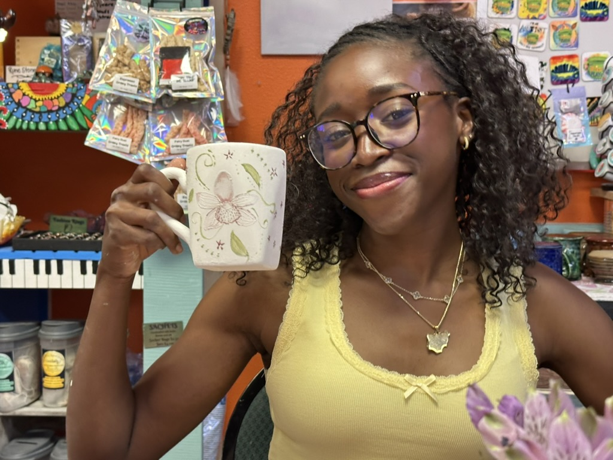
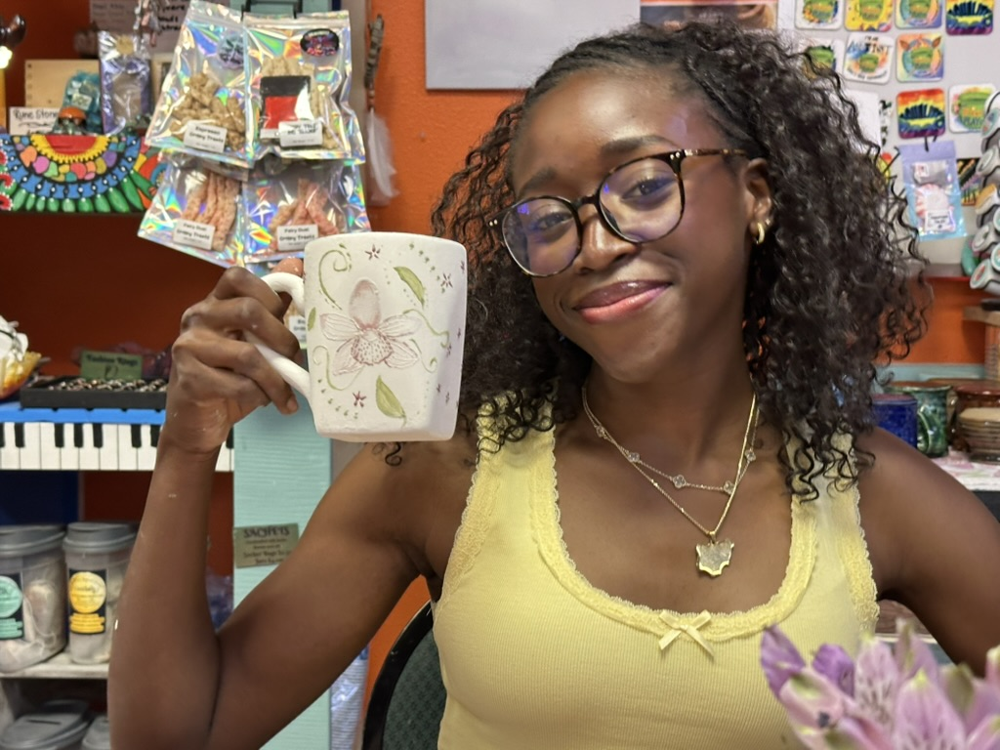

Overview
I am an incoming freshman at UC Berkeley as a Computer Science Major, and I plan to minor in policy. I am from Pueblo, a smaller town in southern Colorado, and a first-generation Nigerian-American. I have always had an interest in technology and healthcare; however, I am especially interested in the role of technology in making medical advancements more equitable.

Coding Journey
Kode with Klossy was one of my first introductions to the world of coding, as I am a former WebDev and Data Science Scholar. After my experience in the camps, I also collaborated with another KWK alumna in the Congressional App Challenge to create a website that served as a resource hub for marginalized individuals aspiring towards healthcare fields. I loved learning to code in a supportive environment, and I have continued to practice ever since, creating projects on my own and participating in GWC during the summers. The skills I learned from these programs especially fueled my desire to explore the intersections of tech and policy as a means to alleviate racial inequities.
Fun Facts
Click the button to see a random fact!

... that was alot of words. Get to know me through some photos!
scroll through the galleries
Traveling
London is my favority city to visit, though I am biased becuase most my family lives there. Recently, I have been exploring California more.

Hobbies
In my free time I am probably starting an elaborate new crochet project, painting, or training. I ran track and field for 4 years, but skating will always be my preffered sport.


Me!
These are some pics of me with family and friends
 
